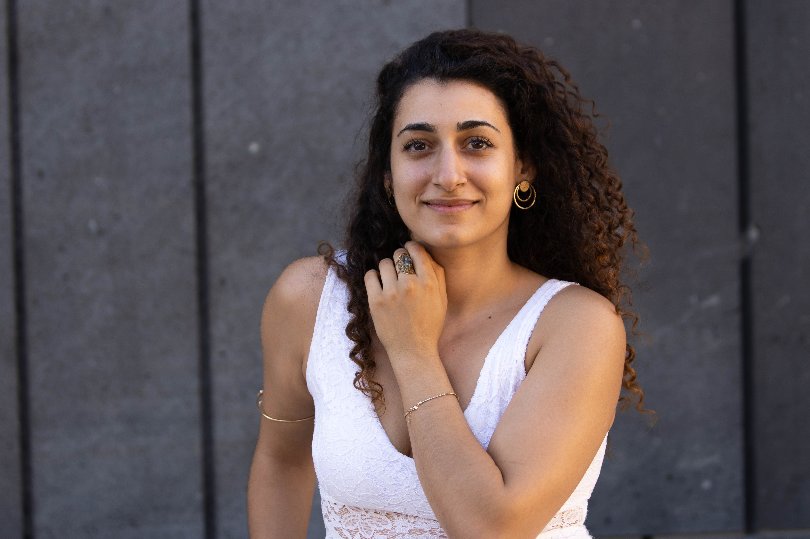
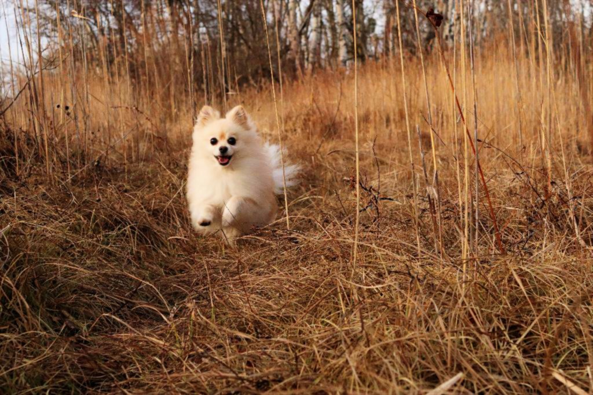

Forthcoming / In press:
Aref-Zahed, S. (forthcoming) ‘The Wolf as Political Symbol: Populist Style and Exclusionary Governance in Austria’, Nature and Culture.
Aref-Zahed, S. (in press) ‘Sacred Hydrology as Policy: Iranian Traditions of Water Governance’, in Mandal, P.K. & Topoonyanont, W.S. (eds) The Ecospiritual Narratives: Literature, Culture, and Media. Palgrave Macmillan.
Aref-Zahed, S. (forthcoming) ‘hamnafas (همنفس / co-breather)’, in Burke, B. & Fay-Stindt, Z. (eds) A Lexicon for Animacy. Publisher to be confirmed.
Under Review:
Aref-Zahed, S. (under review) ‘Eco-Biopolitics and the Governance of More-Than-Human Life: Technocratic and Relational Configurations in the EU and Ecuador’, Environment and Planning E: Nature and Space.
Aref-Zahed, S. (under review; proposal accepted) ‘Eco-biopolitics: Resurrectable life and de-extinction’, in Stark, H. (ed.) Resurrecting Species: Speculative Engagements with De-Extinction. Open Humanities Press.
Aref-Zahed, S. (under review; proposal accepted) ‘Eco-Biopolitics and the Governance of Plant Life in The Overstory’, in Gürova, E. (ed.) The Plant Turn: Literature, Ecology, and the Green Imagination across Periods. Publisher to be confirmed (under strong interest by Bloomsbury Academic’s Critical Plant Studies).
The Birth of Eco-Biopolitics: Bringing More-than-human Life into Governance
MA Political Science, University of Vienna, 2026
Supervisor: Sergej Seitz, PhD
Dynamics of Reappearance of Nearly Extinct Anurans in a Tropical Region Highly Affected by Amphibian Declines
MSc Conservation Biology and Biodiversity Management, University of Vienna, 2026
Supervisors: Prof. Franz Essl & Carlos Adrián García-Rodríguez, PhD
